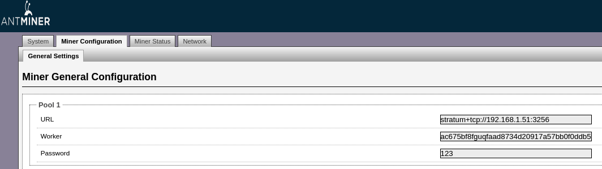

Meter Mining Guide
Mining is how cryptocurrency is created and one way to acquire coins. It is an intensive computing activity, and involves the use of specialized hardware to get rewarded for processing transaction blocks on a blockchain. Meter (MTR) itself is no exception to this.
There are a number of interlinked factors to consider when it comes to mining. Just to name a few:
- Whether it is more economical or profitable to mine or buy cryptocurrency.
- What blockchain to focus on, and why.
- How to approach mining. For example, doing it all yourself, cooperating with others, or have somebody else do it for you.
Making The Case for Mining
Every miner will have their own reasons whether or not to choose mining. For example, under some circumstances it may be highly profitable to mine, while in other situations the costs may be too high and the return on investment too low.
When it comes to owning equipment, the main expenses involved will include the cost of the equipment, and the expenses involved in operating and maintaining it. Mining equipment is specialized hardware that is much more expensive than a standard PC computer, and requires a big upfront investment. That equipment also needs to be housed somewhere, under optimal conditions, such as keeping it cool while running. And, the other big operational factor is the price of electricity and dependability of delivery wherever the equipment is being operated.
When these challenges can be met in the right combination, the other side that needs to be looked at is the return. If the expenses are manageable, and the return on each coin is high enough, then that should equate to a good profit margin. However, it may be the case that at the time of mining a coin it is not actively being traded yet, but the anticipated return sometime later is expected to be profitable.
Mining Meter at this time is in the testing phase, and production mining is set to begin soon. This provides a very good incentive for early adopters to more easily and economically acquire MTR through mining, before it becomes more widely available, and as more miners begin to direct their resources towards the Meter Network.
How to Mine
Generally speaking, miners may choose to operate their own equipment, and gain all the rewards for their efforts, or join together with others in a mining pool, and share the rewards (see What is a Mining Pool). In some cases people can subscribe to a pool and gain some of the rewards, but without owning any equipment of their own. This is called cloud mining. Each has its own benefits and drawbacks, and it is up to each person to determine which approach suits them best.
The remainder of this document is in support of those that already operate their own equipment, or wish to, and are interested in mining Meter. Primarily this will include those that will mine directly on their own, mining pools that choose to support Meter, or those that want to setup cloud mining for Meter. However, this information might also be of interest to others, such as those that are already part of a mining pool, and want to request that their pool add support for Meter.
What is a Mining Pool?
When miners group together to use their combined processing power this is called a mining pool. The rewards from mining are split proportionally according to the amount of hash power miners contribute to the pool.
Mining pools can be split into both public ones and private ones. Public pools will generally charge a fee
Mining is strictly voluntary, and as such miners can opt to switch their mining capabilities whenever they choose, according to their own objectives or criteria. For example, if a miner that traditionally was in a Bitcoin mining pool decided to divert some or all processing power to mine another blockchain, such as Meter, it is simply a case of making a few minor configuration changes to point the mining equipment to the new pool.
Mining Hardware
ASIC miners are specialized hardware machines that are required to efficiently mine Meter.
Since Meter uses SHA256, the same as Bitcoin, miners can use the same hardware for mining both coins, and the mining setup for the two is very similar.
Hardware Setup Guide
Meter uses an account based system, rather than the UTXO based method that Bitcoin uses. However, this difference only amounts to a small change that needs to be made in the configuration.
Follow this guide on installing and configuring your ASICs.
The Meter Mining Pool
Meter is actively working with mining pool providers for future mining support. We have also setup two dedicated Meter mining pools for testing purpose:
- stratum+tcp://34.222.111.82:3256
- stratum+tcp://54.184.235.97:3256
BE AWARE NO REWARD will be distributed from these pools, as the logic has not been implemented yet. For real mining please setup private mining pools.
The following are the rough production parameters for different mining hardware on the Meter testnet, tuned to 1 meter = 10 kwh on an Antminer S9:
| Power | Hash | Efficiency | Meter/Day | Margin Index | |
|---|---|---|---|---|---|
| AntMiner S9 | 1323 | 13.5 | 98 | 31.75 | 1.00 |
| WhatsMiner M10 | 3500 | 55 | 63.64 | 129.36 | 1.54 |
| Inno Silicon T3+ 52T | 2200 | 52 | 42.31 | 79.42 | 2.32 |
| AntMiner S17Pro | 2094 | 53 | 39.51 | 80.95 | 2.48 |
These adaption speed to hash rate changes are still relatively slow on the test net. However, closer to the mainnet launch, parameters will be tuned to more efficient mining hardware, and faster response speed.
The Meter mining pool status statistics can be viewed at http://54.184.235.97:8088/stats.
Miner Configurations
In order to configure a miner to join the mining pool, the following fields in the Miner configuration tab of the ASIC's web panel need to be set:

Where:
URLis the address of the mining pool.Workeris the Meter wallet address.Passwordis the password associated with the wallet.
Running a Private Mining Pool on the Meter Network
An example implementation of the Meter mining pool is available on GitHub, based on the open source nomp Bitcoin mining pool. This code has been provided to show the changes needed compared to standard bitcoin mining pools, and is not intended to be used in a production environment.
Requirements
There are three things required to run Meter nomp: Node.js, a database (Redis or MySQL), and a connection to a coin daemon on the Meter Network, which is a Meter full node that monitors transactions on both the Meter PoW and PoS chains.
On the testnet, coin deamons have already been setup by the Meter team. Normally a pool operator would setup its own coin daemon, and this will be possible in the future.
The following are the minimal version requirements for Node.js and Redis. If older versions than the following are used (e.g. installed by a package manager) then problems will arise:
- Node.js v0.10+ (follow these installation instructions)
- Redis v2.6+ (follow these instructions)
In Ubuntu, you could use the following command to install nodejs and Redis:
| $ sudo apt install npm |
| $ sudo apt install nodejs |
| $ sudo apt install redis |
Important Warning! It is always a good idea to learn about and understand any software that you are using. An important security measure to implement for nomp is to secure the database so it cannot be accessed externally. An easy way to do this for Redis is to include bind 127.0.0.1 in your redis.conf file, and use a firewall with strict rules in place to only allow accessing Redis locally. For more information please read Security. Another good place to start for additional information about using Redis for nomp is Data Persistence.
Downloading & Installing
Clone the repository and run npm update for all the dependencies to be installed:
| $ git clone https://github.com/meterio/meter-nomp.git |
| $ cd meter-nomp |
| $ npm install |
Portal Configuration
Inside the config_example.json file, ensure the default configuration will work for your environment, then copy the file to config.json.
"redis": {
"host": "127.0.0.1",
"port": 6379
}
Coin Configuration
Inside the coins directory, ensure that a json file exists for Meter coin, and if no create it. Here is an example of what the file should look like:
{
"name": "Meter",
"symbol": "MTR",
"algorithm": "sha256",
}
For additional documentation on how to configure coins and their different algorithms see these instructions.
Pool Configuration
There is a json config file meter.json in the pool_configs sub-directory. Make sure to configure the appropriate fields in this file, especially the rewardBeneficiary and the daemon/daemons fields.
In the following example, the pool owner's Meter address is 0a05c2d862ca051010698b69b54278cbaf945ccb (no 0x in the beginning), the rewardBeneficiary should be configured accordingly. In addition, the mining pool has to connect to a coin daemon (full node) on the Meter network. We will use a full node on the testnet （18.236.153.136）. The value for Meter in the daemons section should be configured as follows:
[
{
"host": "test.meter.io",
"port": 8332,
"user": "testuser",
"password": "testpass"
}
]
There are many other fields in meter.json. We could ignore them for now as only limited functions was ported in the current Nomp implementation for Meter.
For more information on these configuration options see the pool module documentation.
Start the Portal
After all the configuration files have been set up, it is time to start the mining pool.
If everything is installed locally on the host, initiate using the following:
| $ node init.js |
The pool should now start running and we could see the status of the pool from the log and http://pool_ip:8080/stats